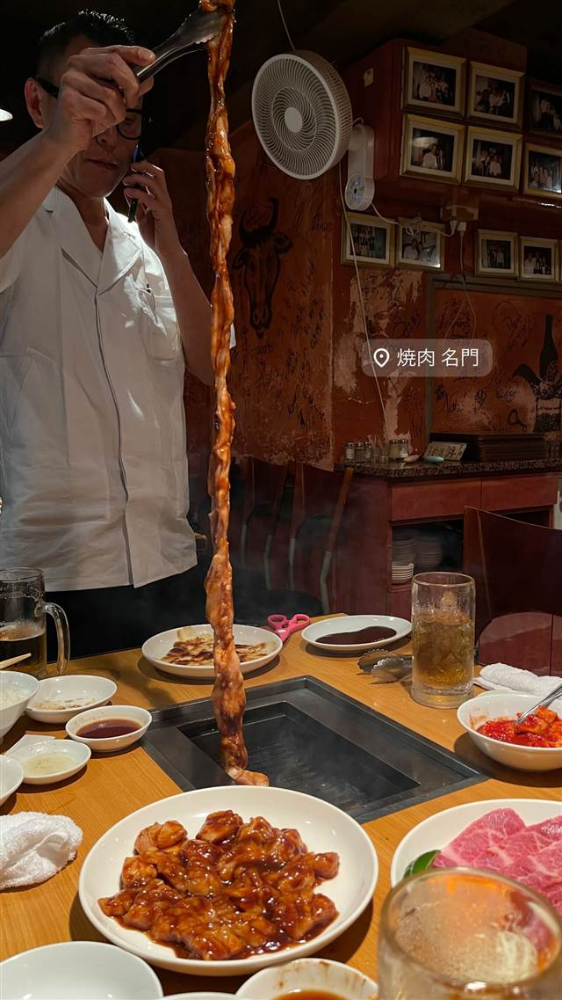
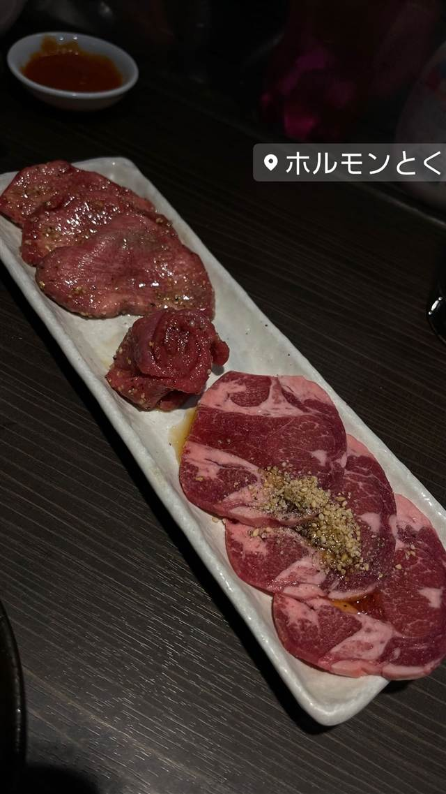

焼肉 · ホルモン · 西新井大師西
焼肉 スタミナ苑
予約不可でも著名人が並ぶ、ザガット絶賛のミックスホルモン
スタミナ苑
WHY GO
ホルモン担当者が閉店後深夜からの仕込みを40年以上続け予約不可でも行列が絶えない
足立区鹿浜という駅から遠い立地にもかかわらず、常に行列が絶えない焼肉の名店。豊島兄弟が代々営み、弟の雅信氏は閉店後の深夜から40年以上ホルモンの仕込みを続けてきた。予約不可でどんな有名人でも並ぶという徹底ぶりで、ザガットサーベイでは「東京一美味しい焼肉店」とも評された。
TRIVIA
豆知識
- 予約を一切受け付けておらず、著名人でも行列に並ぶ必要がある
- ホルモン担当の豊島雅信氏は閉店後深夜からの仕込み作業を40年以上続けている
- 米国の有名グルメガイド、ザガットサーベイで「東京一美味しい焼肉店」と評されたことがある
REVIEWS
世間の評判
4.27食べログ
行列必至の上質な肉とホルモン
- 口の中でとろけるような上質な肉の味わいを評価する声が非常に多い
- ホルモンにまったく臭みがなくいくらでも食べられるという声が多い
- 予約不可で常に2時間以上並ぶこともあるという指摘が非常に多い
食べログ 口コミ2732件
| 創業 | 1950〜60年代創業とみられる（取材時点で「創業57年以上」との記述あり）。兄・豊島久博氏が母親と創業。 |
|---|---|
| 系譜 | 元々は精肉店が本業だったが、親戚の勧めで焼肉店を始めたのが由来。創業から変わらぬ場所・建物で営業を続けている。 |
| 看板 | シマチョウ・ハツ・ギアラ・センマイ・コブクロを塩ダレで和えた「ミックスホルモン」、上タン塩 |
| こだわり | ホルモン担当の豊島雅信氏が「ホルモンは鮮度が命」として、閉店後の深夜から仕込み作業を40年以上続けている。 |
| 掲載・評価 | 食べログ「TOKYO 百名店」2024選出、The Tabelog Award 2025 Silver受賞。米ザガットサーベイでは「東京一美味しい焼肉店」と評されたことがある。 |
| どこから | 23区の外れ・近郊 |
| 行くなら | 行列 |
| 営業時間 | 月 16:00-22:30 火・水 休み 木・金 16:00-22:30 土・日 15:00-22:30 |
| 予算 | 夜 ¥6,000～¥7,999 |
| 定休日 | 火・水曜日 |
| 予約 | 予約不可 |
| 場所 | 西新井大師西 東京都足立区鹿浜3-13-4 |
| メモ | 予約は一切不可で、どんなに有名な人でも並ぶ必要がある。最寄り駅（西新井大師西）から離れた立地ながら常に行列。 |
食べたもの：焼肉・ホルモン / ホルモン焼肉
NEARBY
近い店・同じ系統の店
-
 ホルモン 田町駅（三田口）
ホルモンまさる
芝浦市場直送ホルモンを七輪で焼く焼肉百名店7年連続選出
昼 ～¥999 夜 ¥3,000～¥3,999
ホルモン 田町駅（三田口）
ホルモンまさる
芝浦市場直送ホルモンを七輪で焼く焼肉百名店7年連続選出
昼 ～¥999 夜 ¥3,000～¥3,999
-
 ホルモン 神泉駅
焼肉ホルモン 新井屋 渋谷
高円寺発、下町仕込みの新鮮ホルモンと厚切りタン
夜 ¥6,000～¥7,999
ホルモン 神泉駅
焼肉ホルモン 新井屋 渋谷
高円寺発、下町仕込みの新鮮ホルモンと厚切りタン
夜 ¥6,000～¥7,999
-
 ホルモン 神泉
神泉ホルモン 三百屋（サンビャクヤ）
元化粧品会社員が「闇市倶楽部」で修行した希少ホルモン25種
夜 ¥6,000～¥7,999
ホルモン 神泉
神泉ホルモン 三百屋（サンビャクヤ）
元化粧品会社員が「闇市倶楽部」で修行した希少ホルモン25種
夜 ¥6,000～¥7,999
-

ホルモン 四谷三丁目 焼肉 名門 厚切りタンと長いホルモン、肉を焼きながら歌う店主 夜 ¥15,000～¥19,999 -
 ホルモン 恵比寿駅
亀戸ホルモン 恵比寿店
亀戸本店は雨でも行列、備長炭で焼く国産ホルモン
夜 ¥3,000～¥3,999
ホルモン 恵比寿駅
亀戸ホルモン 恵比寿店
亀戸本店は雨でも行列、備長炭で焼く国産ホルモン
夜 ¥3,000～¥3,999
-

ホルモン 中目黒 ホルモンとく 中目黒 水道橋本店の2号店、プロ野球選手も訪れる新鮮なレバー刺し 夜 ¥6,000～¥7,999